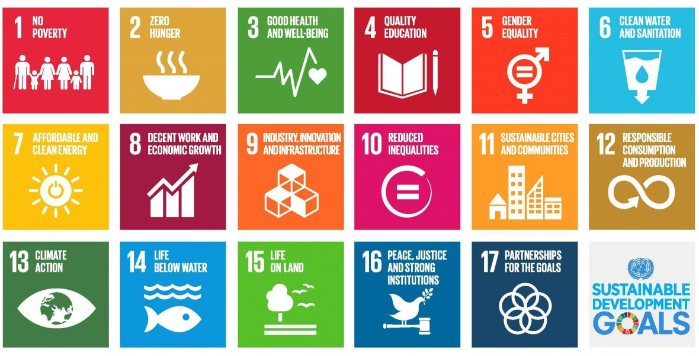
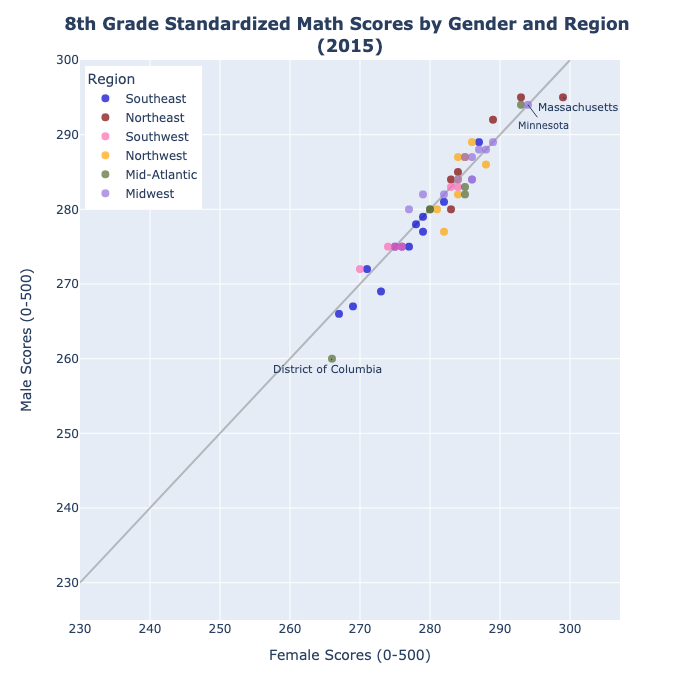
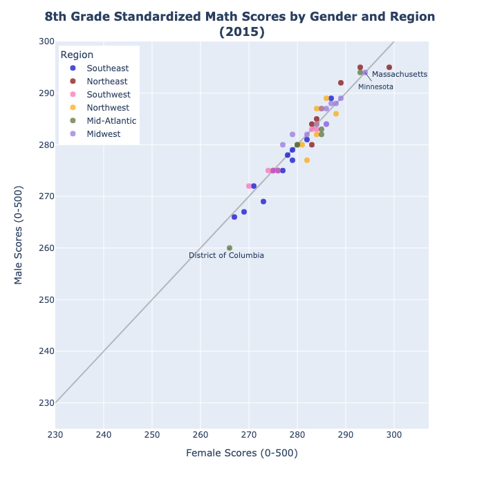
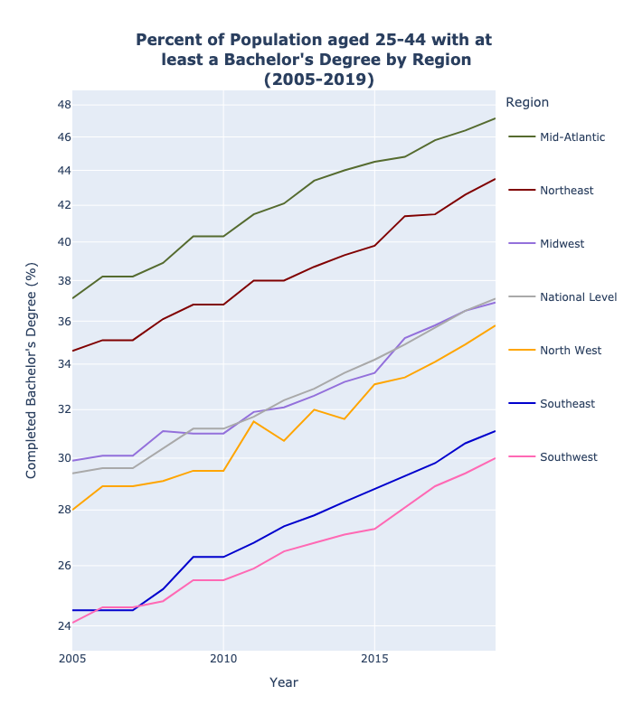
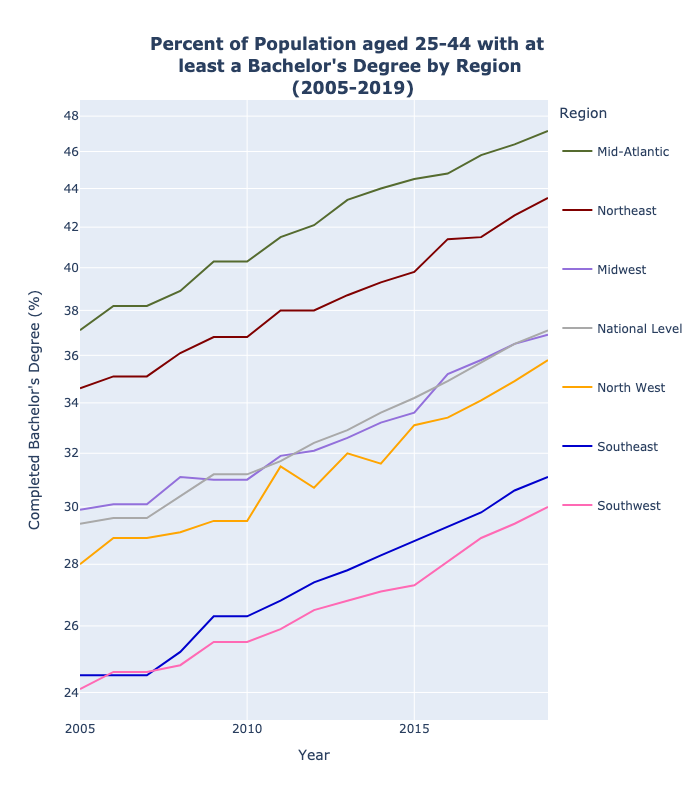

How Successful Has the United States Been in Accomplishing Educational Sustainable Development Goals?
Background:

The United Nation's
Sustainable Development Goals
are a shared plan by the nations of the world to acheive a number of initiatives aiming to "end extreme poverty, reduce inequality, and protect the planet "by the year 2030. The Educational SDGs- located in Group 4- surround objectives for school and learning initiatives.
This is a final project for a Data Visualization Class at William & Mary. The data for this project was found here for educational expenditure, here for testing scores, and here for degree-holding stats.
Project Goals:
- Look at the Status and Progress of 3 key parts of the educational SDGs in order to determine the extent of the US's states/regions successes and failures.
- Transform these successes and failures into a set of visualizations that are interpretable by the larger public.
- Compare the states and regions within the United States to see which are doing comparatively better and worse.
- Show the public, educators, and policy-makers which areas should be focused on.
Part 1: Increasing Educational Funding
1st Educational SDG Subgoal: raise governmental funding for schools.
Quantifying the Goal: In order to visualize this goal, I incorporated the educational expenditure dataset into my master dataset and then divided total expenditure by the number of students to find the educational expenditure per student. I used the racing bar plot package of plotly (raceplotly) to see the evolution of the top spending states over a period from 2005 - 2016. I looked for key increases or decreases, as well as differences in the top states shown between each criteria.
Note: these graphs also come in the form of interactive webpages! Click here for the interactive total expenditure racing plot and here for the interactive expenditure per student racing bar plot!
SDG #1 Conclusions:
- The Expenditure per student section was dominated by the Northeast and Mid-Atlantic states. The only three states to appear in the top 10 outside of these regions are Alaska, Wyoming, and North Dakota. The Southeast and Southwest were not represented at all.
- The Expenditure per student section showed universal progress in spending towards education.
- Michigan had a drop from $20,490,000 to $18,000,000 in the total expenditure.
- The Northwest is the only region not represented in the top total expenditures.
Overall Progress: Success (with a few caveats)
Part 2: Acheiving Gender Equality in Testing
2nd Educational SDG Subgoal: Move closer to educational gender equality.
Quantifying the Goal: After adding the Nation's Report Card to my master data set, I compared the first (2005) and last (2015) recording periods in order to see the progress of gender equality in mathematics and reading tests. I decided to use a scatterplot where each state is a point and they are colored by region. I also included a 'gender equality' line that represents complete equivalence in scoring
- Minimal progress overall for both reading and mathematics scoring gender equality.
- Progress seen additionally in score improvement, especially noted in outliers.
- In mathematics testing, outliers DC and Massachusetts moved further from gender equality during the recording period, while Minnesota made progress.
- In reading testing, outliers all made minimal progress towards the gender equality line.
Overall Progress: Mixed
Part 3: Raising Degree Completion
3st Educational SDG Subgoal: increase the amount of adults holding secondary and higher education degrees
Quantifying the Goal: I utilized the dataset of population percentages with at least high school and bachelor's degrees. After adding the dataset to my master dataset, I created averages based on the regions manually in order to easily see divisions between regions and increase legibility when compared to a graph looking at states. Line graphs below show the comparison of adults (25-44 years old) in each region with at least each type of degree. Additionally, I added a line for the national level to compare each of the regions to the nation's average.
- Percent of adults holding each of the degrees studied has increased in all regions from the beginning to the end of the collection period.
- Northeast region consistently had the highest percentage of adults holding at least high school degrees, while Mid-Atlantic consistently had the highest percentage of adults holding at least bachelor's degrees.
- Southwest region consistently had the lowest percentage of adults holding at least high school degrees, while Southwest and Southeast consistently had the lowest percentage of adults holding at least bachelor's degrees.
Overall Progress: Success
Overall Conclusions:
- Though all of the SDGs I looked at had some form of success during the recording period in the United States, the level of success definitely varied.
- Educational Expenditure: This SDG had an overall success; however, a few caveats keep it from being a total success. These include the fact that it was neccessary to limit this visualization to only the top 10 states for each category and that there were instances where states lowered their funding during the period. The limitation of the states inherantly limits the amount of cases that I could see; there could be other failures hidden. The fact that some regions were absent from one or both suggests that they may have a regional issues with funding. In the areas without representation on either bar race, as well as those states that decreased funding, this is a point that needs to be focused on.
- Scoring: Overall scoring has improved, including moving slightly closer to gender equality in standardized scores. However, especially in mathematics scores, there were mixed results, with some of the outliers moving away from gender equality instead of towards it. Additionally, many of the other unmarked points had minimal change towards the gender equality line. Thus, the success for scoring was mixed. This is the SDG that needs to be considered on the most universally in terms of policy focus.
- Degrees: This was the most total success out of the SDGs I looked at. All regions improved their percentages during the period, so this can be classified as a complete success.
.png)
.png)
.png) 

.png) 
